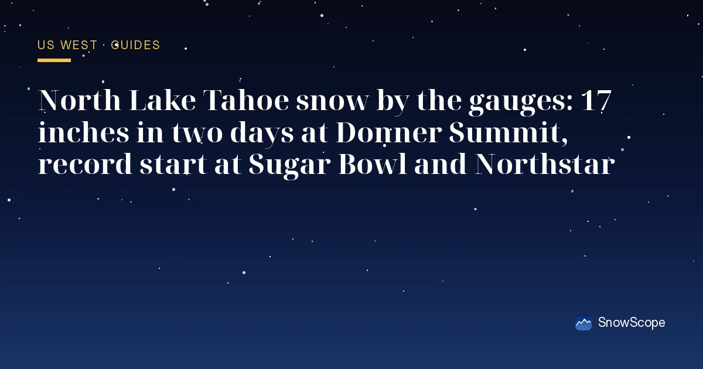

Sugar Bowl: snow today
Sugar Bowl: snow today. The snow gauges around North Lake Tahoe tell the story of this storm better than any forecast. The gauge at the Central …
North Lake Tahoe snow by the gauges: 17 inches in two days at Donner Summit, record start at Sugar Bowl and Northstar

The snow gauges around North Lake Tahoe tell the story of this storm better than any forecast. The gauge at the Central Sierra Snow Lab near Donner Summit, at 6,890 ft, measured 19 inches of snow on Tuesday morning, 17 November 2026, and 36 inches on Thursday morning: 17 inches (43 cm) more in two days, with the heaviest snow still falling on Thursday. Sugar Bowl, Northstar and Diamond Peak now have more snow for the date than in any of the past 46 winters.
What the gauges measured
The federal SNOTEL network has automatic gauges in the forest and on the ridges around the lake. Between Tuesday and Thursday morning, the Mt. Rose ski area gauge above Diamond Peak, at 8,810 ft, gained 23 inches and now reads 43 inches. Ward Creek #3 above Homewood gained 13 inches to 27 inches, Marlette Lake above Incline Village 12 inches to 26 inches, and Rubicon #2 on the west shore 11 inches to 19 inches. Even Truckee #2, low at 6,500 ft, went from 5 to 16 inches.
The water in the snowpack is far above normal for the date: 840 % of the usual at Ward Creek #3, 633 % at Marlette Lake and 1250 % at Rubicon #2. Percentages that high happen because mid-November normally has very little snow; they mean the pack already holds what a typical early December would.